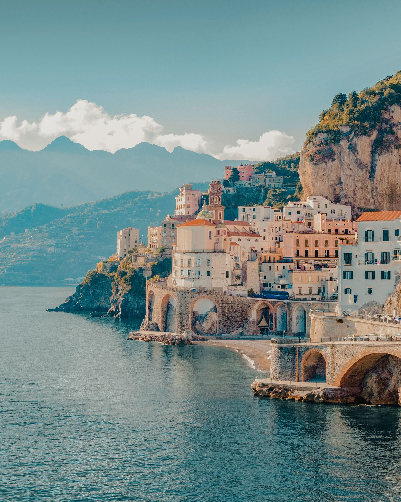
1703 sailings from Variety Cruises and Regent Seven Seas and Seabourn and Explora Journeys and Silversea and Ponant and Sea Cloud and SeaDream and Scenic and Star Clippers. 528 of them call in Türkiye, Greece or Italy, and those come first. Explora fares are CruiseHost's current lead fare; Variety fares are the line's 2026–27 catalogue. Every fare is confirmed with the line before you commit.
1703 sailings
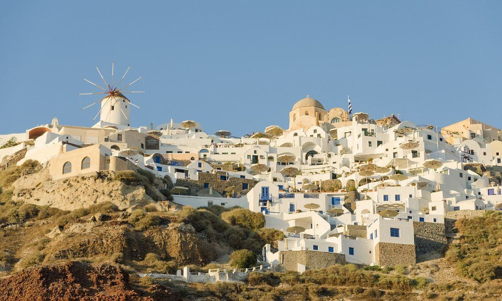
Athens · Poros · Poliegos · Folegandros · Santorini · Antiparos · Paros · Delos · Mykonos · Syros · Kythnos
Athens · Kea · Delos · Mykonos · Santorini · Rethymnon · Kythira · Monemvasia · Nafplion · Hydra · Marina Zea
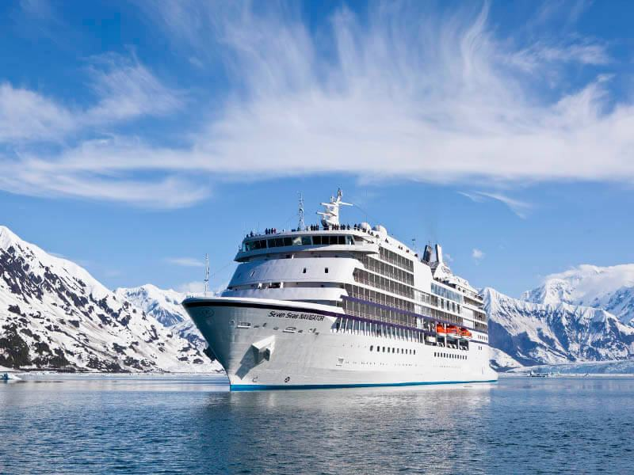
Istanbul · Cruising in the Aegean Sea · Izmir · Mykonos · Athens (Piraeus) · Heraklion · Alexandria · Valletta · Messina · Salerno · Rome (Civitavecchia)
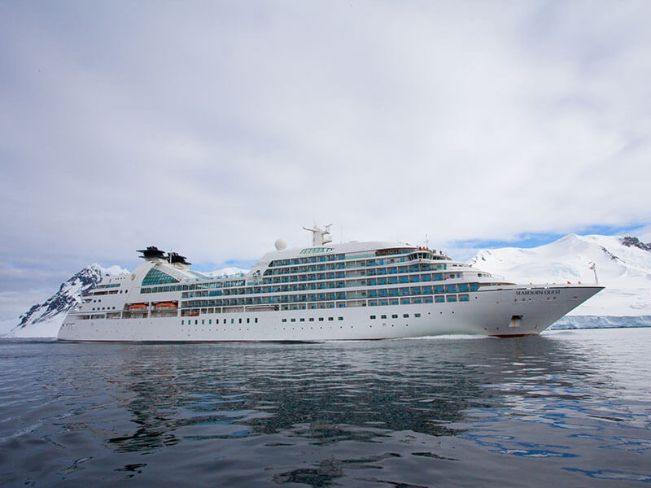
Dubrovnik · Korcula · Brindisi · Sarande · Zakynthos · Nafplion · Athens (Piraeus)
Dubrovnik · Korcula · Brindisi · Sarande · Zakynthos · Nafplion · Athens (Piraeus) · Gythion · Chania · Mykonos · Kuşadası (Ephesus) · Cesme · Istanbul
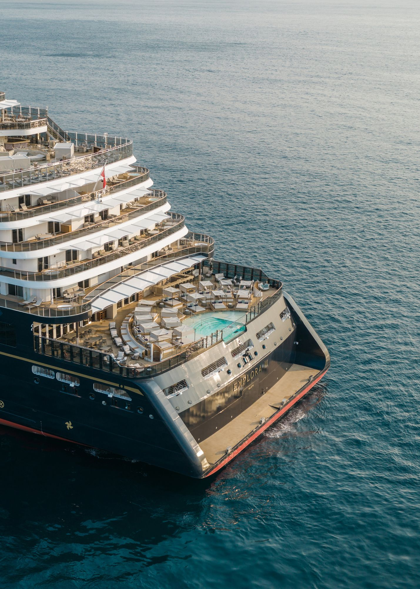
Rome (Civitavecchia) · La Spezia (for Florence and Pisa) · Monte Carlo · St. Tropez · Mahon · Valencia · Barcelona
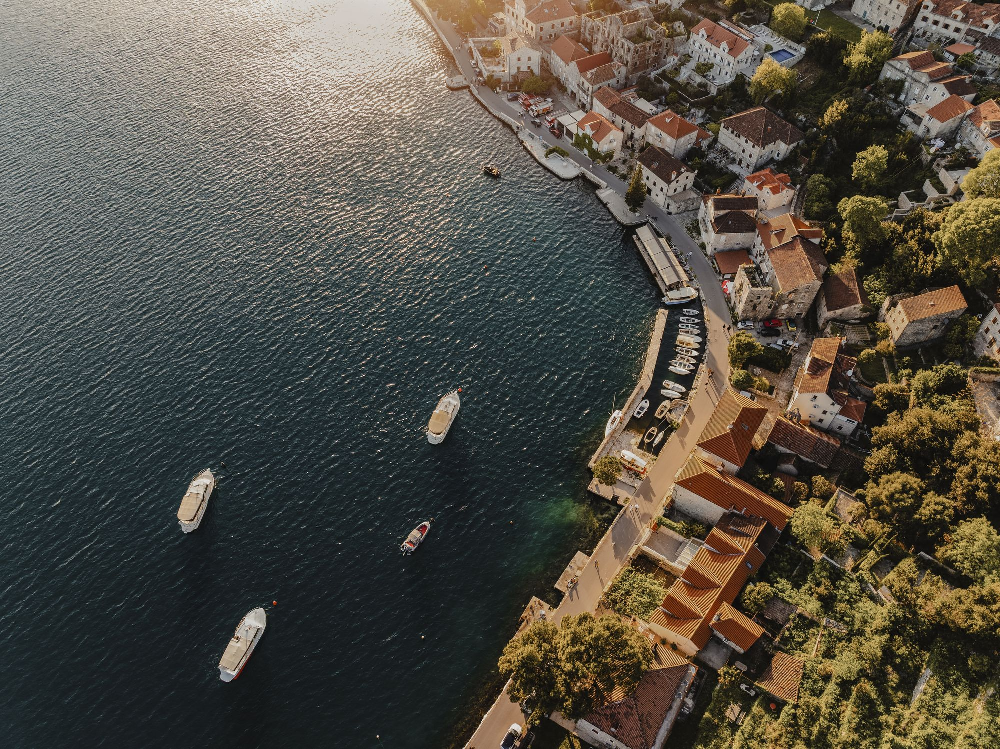
Athens (Piraeus) · Paros · Rhodes · Corfu · Hvar · Rijeka · Venice (Fusina)
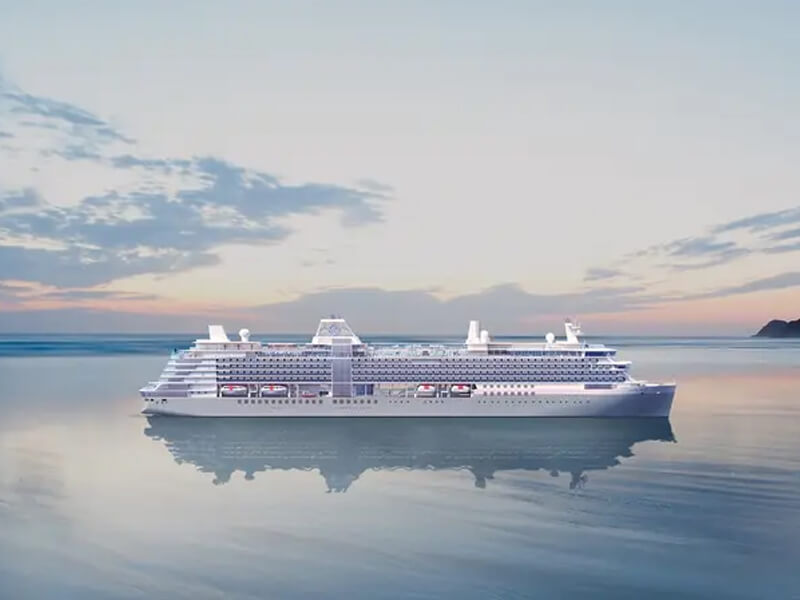
Athens (Piraeus) · Heraklion · Rhodes · Kuşadası (Ephesus) · Mykonos · Nafplion
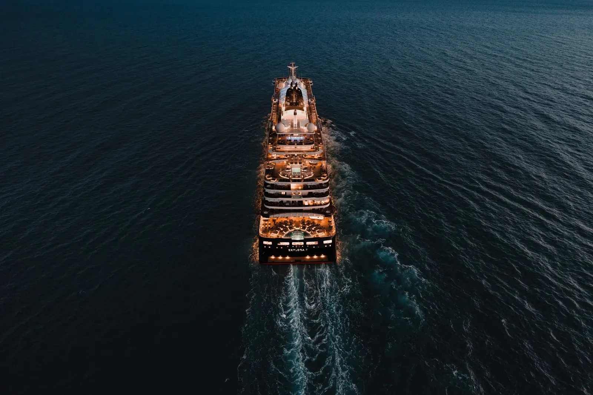
Athens (Piraeus) · Paros · Rhodes · Corfu · Hvar · Rijeka · Venice (Fusina) · Rovinj · Dubrovnik · Brindisi · Kotor · Milos
Rome (Civitavecchia) · La Spezia (for Florence and Pisa) · Monte Carlo · St. Tropez · Mahon · Valencia · Barcelona · Marseille · Villefranche (Nice) · Porto Santo Stefano · Naples · Palermo · Ibiza · Palma de Mallorca
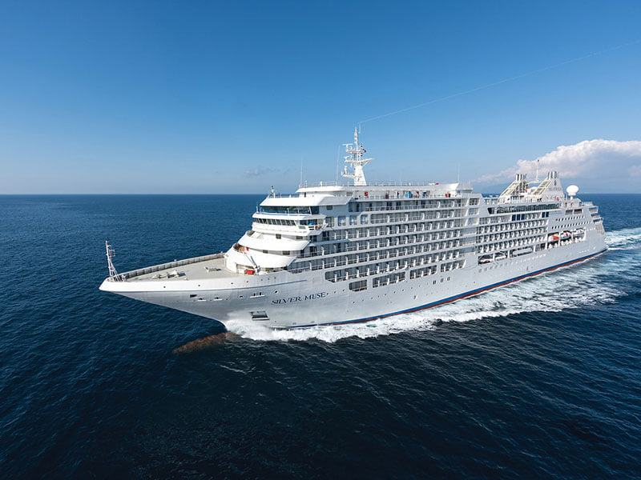
Venice (Fusina) · Pirau · Zadar · Hvar · Dubrovnik · Naxos · Valletta
Venice (Fusina) · Pirau · Zadar · Hvar · Dubrovnik · Naxos · Valletta · Trapani · Cagliari · Cartagena · Malaga · Lisbon
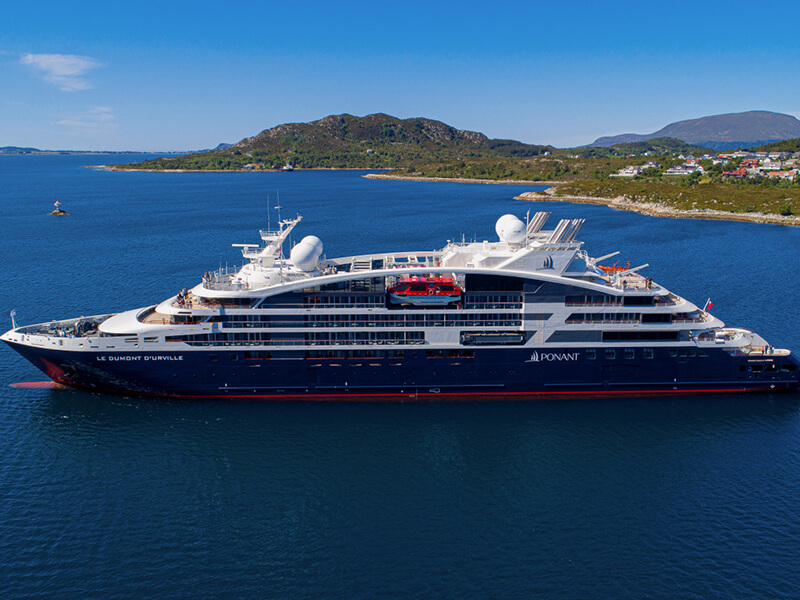
Athens (Piraeus) · Kuşadası (Ephesus) · Patmos · Heraklion · Amorgos · Delos · Mykonos · Nafplion
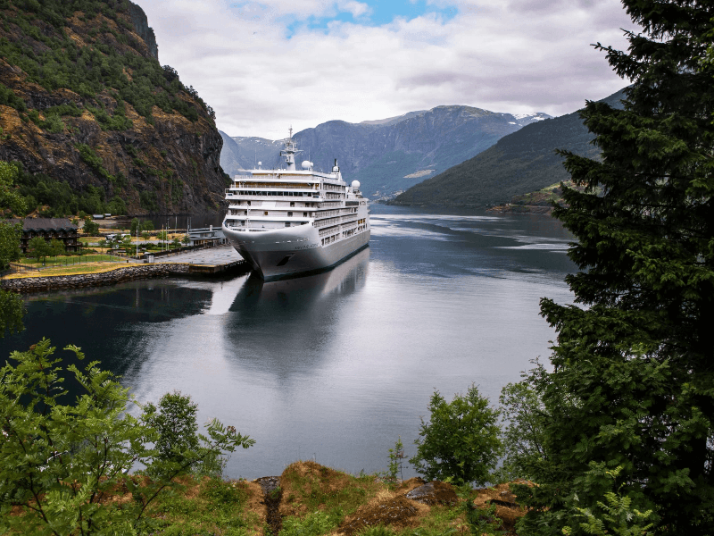
Rome (Civitavecchia) · Naples · Amalfi · Naxos · Valletta · Kotor · Split · Zadar · Rovinj · Venice (Fusina)
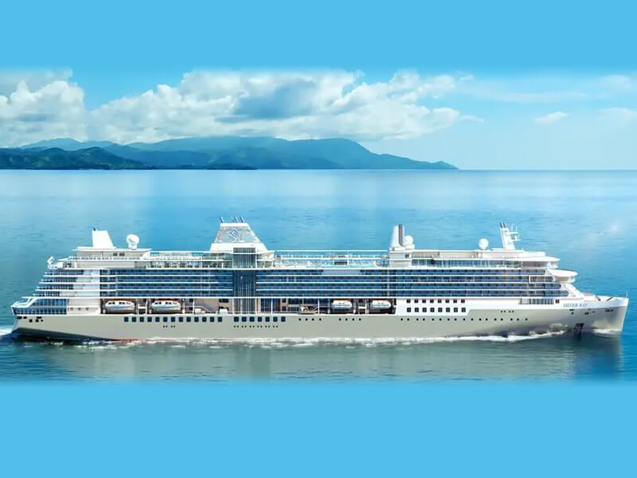
Monte Carlo · Toulon · Ajaccio · Porto Santo Stefano · Portoferraio · Livorno · Portofino · Trapani · Naples · Rome (Civitavecchia)
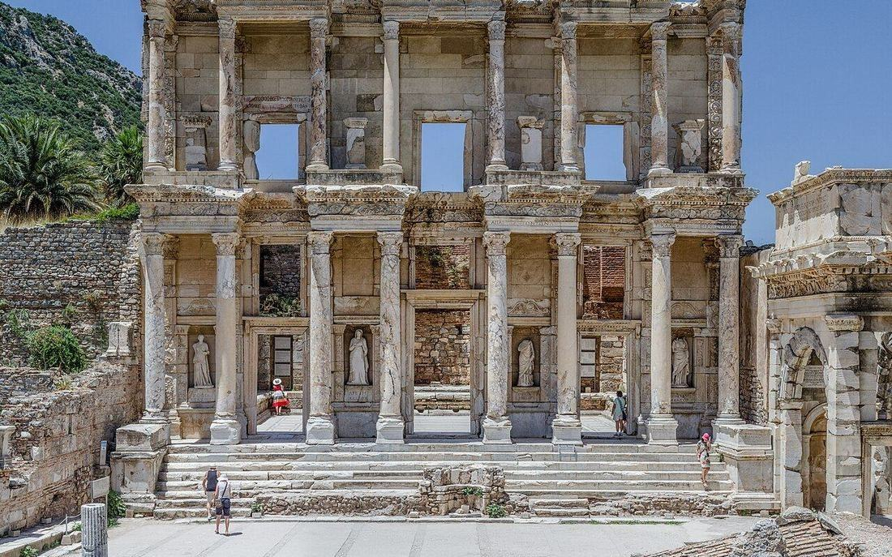
Athens (Lavrio Port) · Syros Or Kea · Delos · Mykonos · Samos · Kusadasi (Turkey) · Patmos · Naxos · Sifnos
Athens · Cape Sounion · Ikaria · Patmos · Lipsi · Kalymnos · Levitha · Amorgos · Koufonissia · Iraklia · Serifos
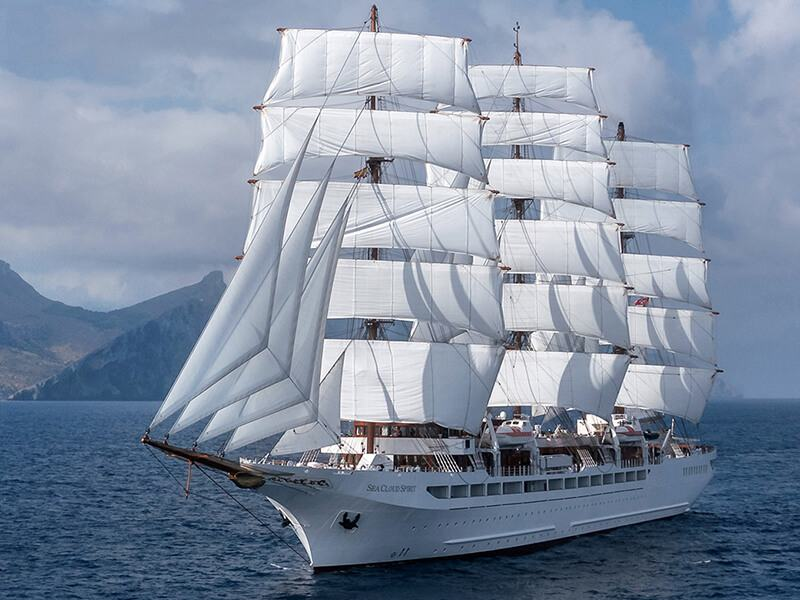
Catania · Naxos · Palermo · Trapani · Pozzallo · Syracuse · Valletta
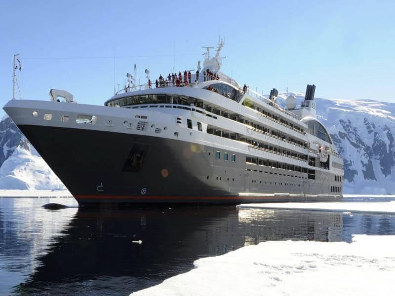
Valletta · Trapani · Palermo · Cagliari · Mahon · Palma de Mallorca · Barcelona
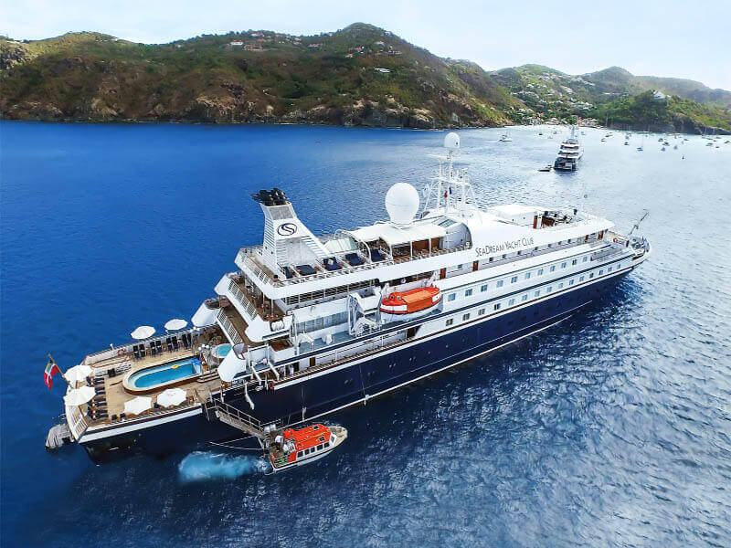
Athens (Piraeus) · Corinth Canal · Fiskardho · Cruising in the Ionian Sea · Taormina · Amalfi · Capri · Rome (Civitavecchia)
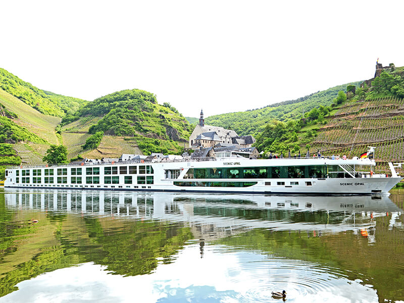
Budapest · Mohacs · Vukovar · Belgrade · Russe · Silistra · Giurgiu · Bucharest · Istanbul · Canakkale
Venice (Fusina) · Rovinj · Dubrovnik · Brindisi · Kotor · Milos · Athens (Piraeus)
Barcelona · Marseille · Villefranche (Nice) · Porto Santo Stefano · Naples · Palermo · Ibiza · Palma de Mallorca
Venice (Fusina) · Rovinj · Dubrovnik · Brindisi · Kotor · Milos · Athens (Piraeus) · Syros · Mykonos · Santorini · Pylos · Gallipoli · Hvar · Rijeka
Barcelona · Marseille · Villefranche (Nice) · Porto Santo Stefano · Naples · Palermo · Ibiza · Palma de Mallorca · Alicante · Lisbon · Casablanca · Tangier · Malaga · Motril
Istanbul · Canakkale · Bucharest · Giurgiu · Silistra · Russe · Belgrade · Vukovar · Mohacs · Budapest
Istanbul · Canakkale · Bucharest · Giurgiu · Silistra · Russe · Belgrade · Vukovar · Mohacs · Budapest
Istanbul · Canakkale · Bucharest · Giurgiu · Silistra · Russe · Belgrade · Vukovar · Mohacs · Budapest · Vienna · Krems · Dürnstein · Brandstatt · Passau · Regensburg · Nuremberg · Bamberg · Würzburg · Wertheim-Miltenberg · Rüdesheim · Middle Rhine Valley · Bonn · Cologne · Amsterdam
Valletta · Trapani · Cagliari · Cartagena · Malaga · Lisbon
Athens (Piraeus) · Skiathos · Volos · Thessaloniki · Limnos · Athos · Monastic State Athos · Kuşadası (Ephesus) · Hydra
Valletta · Syracuse · Palermo · Trapani · Cagliari · Mahon · Palma de Mallorca
Rome (Civitavecchia) · Bonifacio · Porto Cervo · Positano · Amalfi · Lipari · Taormina · Valletta
Istanbul · Canakkale · Izmir · Patmos · Rhodes · Spetsai · Athens (Piraeus)
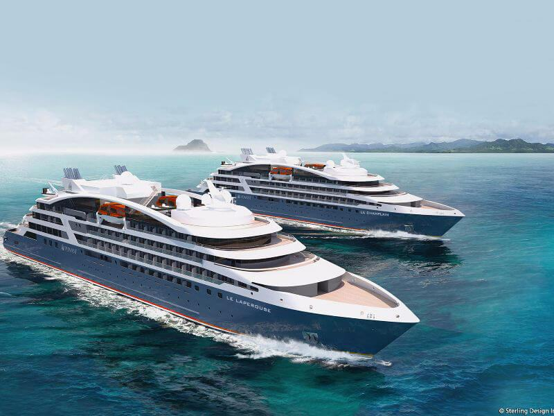
Athens (Piraeus) · Heraklion · Santorini · Rhodes · Bodrum · Delos · Mykonos · Hydra
Rome (Civitavecchia) · Naxos · Valletta · La Goulette · Trapani · Cagliari · Cartagena · Valencia · Barcelona
Athens (Piraeus) · Syros · Mykonos · Santorini · Pylos · Kotor · Gallipoli · Hvar · Rijeka · Venice (Fusina)
Nothing matches those choices. Clear one of them, or tell us what you have in mind.
Sources: Variety Cruises (19), Regent Seven Seas (70), Seabourn (77), Explora Journeys (352), Silversea (369), Ponant (89), Sea Cloud (25), SeaDream (24), Scenic (627), Star Clippers (51). Silversea and Scenic join when their CruiseHost inventory is connected.